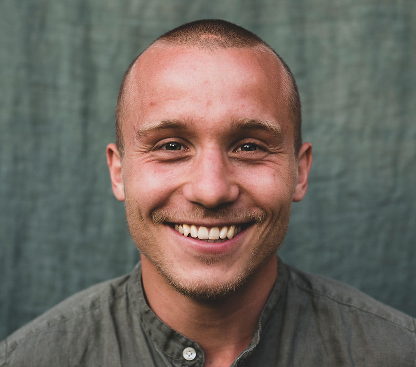
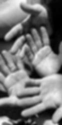

Noah Schlosser
Somatic Bodywork and Deep Massages

Hi there, happy that you have found your way. I am currently in training to become a Pantarei Approach practitioner and want to take you along my journey. I offer somatic bodywork sessions and deep massages in Berlin, and am able to offer my services at your home. I've always been fascinated by helping people reconnect with themselves, particularly through the art of communication and touch.
There are no experiences beyond your body.
All that you are, and all that you seek, begins and ends here – in the felt sense of your body.
I believe that coming home to your true self takes more than words.
It calls for presence – for real, lived moments where you feel yourself, fully, beyond thought.
In stillness, in movement, in deep touch – you reconnect with what has always been within you.
Wherever you are on your path, I welcome you to share a space of safety, trust, and non-judgment – a space where your body can soften, your nervous system can settle, and your truth can rise gently to the surface.
My hope is that through somatic bodywork and deep, intuitive massages, you remember yourself not as someone broken to be fixed, but as someone whole, waiting to be felt.
By gently guiding awareness to internal sensations, we reconnect with our innate capacity to self-regulate and heal.
Peter Levine
Experience is not what happens to you, it's what you do with what happens to you.
A.L. Huxley
Through the body, we can access what words cannot express.
B. van der Kolk
Growth always involves a process of differentiation, of emergence from embeddedness in the unconscious, of becoming aware of the forces that shape the psyche, and of integrating them into consciousness.
C.G. Jung
Within one is all and in the many is the one. The one is all and the many are one.
Uisang
Services

Somatic Bodywork
Deep Massage
The body holds the experiences we have lived, even when the mind has forgotten.
Somatic bodywork following the Pantarei Approach is a deeply intuitive and body-centered practice that combines touch, movement, and verbal communication to support individuals in reconnecting with their inner strength and emotional resilience. Rooted in the belief that every person holds the potential for growth and healing within, this method gently guides clients to explore how emotions manifest in their physical body and how awareness of these sensations can lead to meaningful change. Through the compassionate presence of the practitioner, clients often experience a renewed sense of clarity, empowerment, and vitality. By fostering trust in one's own body and emotional intelligence, Pantarei somatic bodywork helps people break through limiting patterns, reduce stress, and cultivate a more authentic and connected life.
Duration of first session: ca. 75-90 min. Subsequent sessions: ca. 60 min.
Who doesn't feel the weight of the world on their shoulders? Deep massage sessions are a therapeutic bodywork service that focuses on reaching the deeper layers of muscles, fascia, and connective tissue to release chronic tension, improve mobility, and support emotional and physical well-being. Using slow, intentional strokes and sustained pressure, these sessions aim to dissolve muscle knots, realign posture, and restore natural body flow. Often used to relieve stress, support injury recovery, and promote deeper embodiment, deep massage sessions offer a powerful space for both physical relaxation and inner healing.
Duration: ca. 60 min
Calendar isn't available yet
You'll see a calendar here with available times once a service is added to it.
Noah Schlosser
Somatic Bodywork and Massages
Let us connect:
+49 1721899287
info@noahschlosser.de
The services offered here do not constitute medical, psychotherapeutic, or healing treatments as defined by the German Heilpraktikergesetz (Healing Practitioners Act). No promises of healing are made. These sessions are not a substitute for medical or psychological diagnosis or treatment.